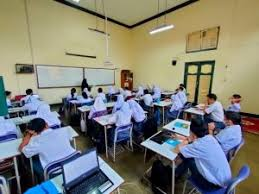

Tes kemampuan Akadmeik
https://campus.quipper.com/kampuspedia/tes-kompetensi-akademik-tka
TKA atau tes kemampuan akademik sedang dilaksanakan di SMAN 3 Bandung dengan bertujuan untuk mengukur kemampuan dasar seseorang dalam bidang akademik yang berkaitan dengan logika, penalaran, dan pemahaman ilmu pengetahuan. Tes ini digunakan untuk melihat sejauh mana kesiapan seseorang dalam mengikuti kegiatan belajar atau pekerjaan yang membutuhkan kemampuan berpikir analitis.
Melalui TKA, seseorang dapat diketahui tingkat kemampuan berpikirnya dalam memahami bacaan, menganalisis informasi, serta melakukan penalaran matematis dan verbal. Oleh karena itu, TKA sering dijadikan alat ukur dalam proses seleksi masuk perguruan tinggi maupun rekrutmen pekerjaan, karena hasilnya dianggap mampu menggambarkan potensi intelektual dan kesiapan individu dalam menghadapi tantangan belajar atau bekerja.
Selain itu, tujuan lain dari pelaksanaan TKA adalah untuk membantu lembaga pendidikan atau instansi tertentu dalam menilai kemampuan dasar peserta secara objektif. Tes ini berfungsi sebagai indikator apakah seseorang memiliki kemampuan akademik yang sesuai dengan standar yang dibutuhkan untuk melanjutkan pendidikan ke jenjang yang lebih tinggi atau menjalankan tanggung jawab di dunia kerja.
Dengan adanya TKA, setiap peserta juga dapat mengenali kekuatan dan kelemahan dirinya di bidang akademik. Misalnya, seseorang bisa mengetahui apakah ia lebih unggul dalam penalaran verbal, numerik, atau logika. Pengetahuan ini penting karena dapat dijadikan dasar untuk mengembangkan kemampuan diri lebih lanjut. Secara keseluruhan, Tes Kemampuan Akademik bukan hanya sebagai alat seleksi, tetapi juga sebagai sarana untuk memahami potensi intelektual seseorang dalam menghadapi berbagai tuntutan akademik dan profesional di masa depan
sumber: https://campus.quipper.com/kampuspedia/tes-kompetensi-akademik-tka
Kembali